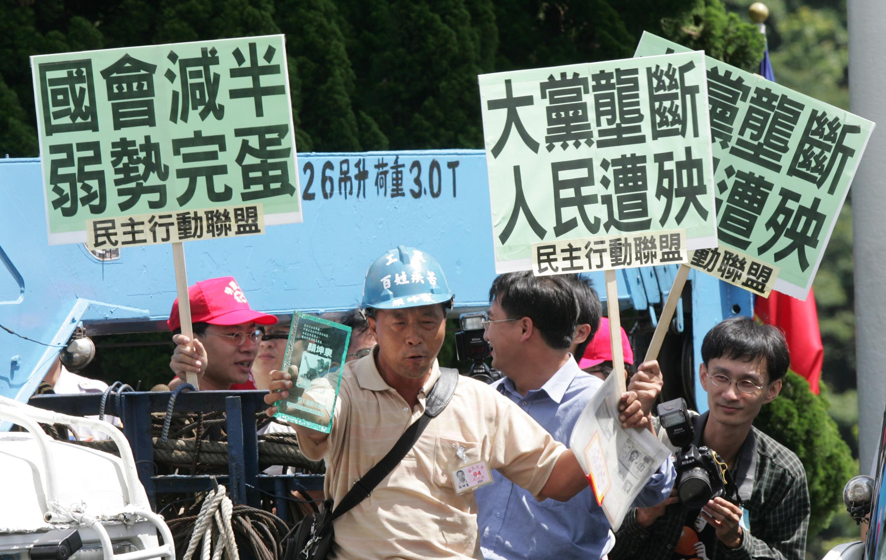

photo credit：Reuters
朱高正認為，國會在民主政治中應該扮演什麼角色，除了憲法所規定的職權之外，最重要的莫過於立法院代表國民的意志。
1980年代末期的立法院有其盤根錯節的歷史脈絡，以及在威權統治之下被弱化的國會功能與奇特的組織，若要進行改革非得霹靂手段不可。
然而回顧這段自己親手參與打造的國會改革史，出人意料地，朱高正對此改革後的立法院卻抱持否定的看法。
「你可不可以告訴我，這20年來哪一種國會改革是好的是對的？你告訴我，一件就好！」朱高正問道。
「我隨便舉個例給你看，以上一次近20年來國會改革最重要的兩個改革，一個國會減半，一個單一選區兩票制。我們先來看單一選區兩票制，為了單一選區兩票制，在立法院舉辦十次專家學者聽證會，才第一場結束而已，那時候民進黨的沈富雄就私底下跟我講，就算一面倒反對現在的修正案也沒有用，因為國民黨和民進黨都談好啦！狼狽為奸哪！」朱高正回憶道。
「單一選區兩票制第一個在台灣提的就是我，在1986年就提了。我對德國這個制度的研究，應該說是屬於專家啦，但是我們台灣採用的是什麼？它不是聯立制，是分立制（並立制）啦，也就是對最大黨最有利，對越小黨越不利。因為國民黨想說我只要跟親民黨合併之後，我就是最大黨，民進黨那時候是現實上的最大黨，所以他們兩個也談好，其他人就不考慮了！」
單一選區兩票制的推行，原本是要革除長期以來因為實行「複數選區單記不可讓渡制」（SNTV制）的弊病。這個選制在1994年日本廢除後，全世界的民主國家僅剩台灣還在使用。運作多年來，因為SNTV制的設計讓選民唯一的一票只能投給「大」選區內多個候選人當中一位，候選人只要越過門檻（通常只需要幾千票）即當選。所以不但初選即已開始同黨相殘，且因選區內不只一人當選，所以只要候選人獲得一定的票數越過安全門檻，固守自己的地盤即可當選，因而助長地方政治派系、配票等反民主的風氣，候選人賄選、走偏鋒更不在話下。
但單一選區兩票制採並立或聯立制在當時也引起爭論，以採行並立制的日本和聯立制的德國兩國的經驗來看，並立制對於大黨有利是不爭的事實。並立制是選民所拿到的兩張票，一張投給選區內的候選人，以簡單多數原則決定該選區的唯一一位候選人的當選資格。第二張票即是政黨票，決定不分區立委的席次。選民投給喜歡的政黨後，根據跨過5%門檻的政黨按照得票比例分配不分區立委的席次。
聯立制就相對複雜一些，簡單地說，和並立制以政黨票得票比例計算「不分區立委」席次不同的是，聯立制決定「整個國會席次的政黨比例」。詳細地說，就是先以得票率決定各政黨在國會內的總席次，然後再由每個政黨所分配到的總席次，「扣掉已當選的區域立委席次」，所得的就是各個政黨的「不分區席次」。
以2012年的立委選舉結果實際試算，就可以看到兩個制度對於小黨產生明顯的席次差異。聯立制之下，以得票率通過5%門檻的台灣團結聯盟與親民兩黨為例，親民黨第二階段得票率5.86%，得票率乘上席次113席無條件進位後為7席；台聯第二階段得票率8.96%，乘113席無條件進位後則為11席。因兩黨的區域立委皆無人當選，所以不需扣掉區域立委席次。 以2012年的立委選舉結果實際試算，就可以看到兩個制度對於小黨產生明顯的席次差異。聯立制之下，以得票率通過5%門檻的台灣團結聯盟與親民兩黨為例，親民黨第二階段得票率5.86%，得票率乘上席次113席無條件進位後為7席；台聯第二階段得票率8.96%，乘113席無條件進位後則為11席。因兩黨的區域立委皆無人當選，所以不需扣掉區域立委席次。
在現行的並立制之下，台聯與親民兩黨最後所獲得的席次都是3席，但如果採聯立制就分別成長至7和11席，席次差異近兩倍和四倍，聯立制對於小黨的席次明顯比並立制有幫助。
「其實單一選區兩票制的精義是『平衡』，因為一般來講，任何選舉基本上都是對大黨比較有利的。單一選區兩票制，就是希望能夠讓選票真正能做到實質上的『票票等值』，也就是不只是計算價值，包含成就價值。但是這一點都沒有，我告訴你，在立法院辦的十次聽證會，我內容全看，是一面倒全部都反對，國民黨跟民進黨提的還是通過了。」朱高正說。
朱高正強調，一個真正健全的民主體制，一定要設立這樣的機制，讓新生的政治力量出現的門檻不要太高，這樣才能夠預防現有的政黨的腐敗，一定要讓不努力的政黨很快就被扯下來。
談完單一選區兩票制所帶來的影響，朱高正接著分析立委減半，從原本225席立委減至113席所帶來的惡果。
「這個減半的事我早就反對啦！這個是用常識看就知道，全世界各國國會最理想的人數大概就是在200到450，不管國家大小，因為差不多450以下，人太多很難形成決議（另有理論認為議員人數為150到660人，如德國與英國下議會，議員人數在660人上下。或以人口總數開根號或開立方根為依據）；你人太少，容易被寡頭壟斷。」
朱高正認為，一個國會要正常運作，先不管該國人口數，至少要200到450人，而在改制之前的225席，其實是合適的。但就因為立法院的亂象，讓政治領袖以沒有根據的道德訴求，逼迫朝野將立委人數減半，原本的問題沒有解決，反ˋ而製造更多問題。
「113席是什麼概念啊？你立法院至少要10個委員會嘛，那時候都12個，那你就一個各委員會都不到10個，一半的人來簽到，就可以開會啦！也就5個人來簽到就可以開會啦！」目前立法院內共有8個常設委員會，4個特種委員會，113位立委就算一個蘿蔔一個坑，平均一個委員會10多位委員，開會的情況就如同朱高正所形容，「5個開會上面就坐一個主席，下面就2個人，其他人也都不一定來，3個人就開會啦！你說這樣開出來的品質如何？你能放心嗎？這代表國民的意志反映嗎？」雖然之後的《立法院各委員會組織法》第三條規定委員會至少13席委員，但對於審查法案的效率沒有多大改善。
「我們本來225席是剛好在這個範圍裡頭的，因為台灣人口也不太多，是適中的。就一個林義雄，他又不是這方面的專家，他的道德光環大家不敢講，」朱高正強烈批判道，「我問你啊，蘇貞昌不是他在當民進黨黨主席要卸任前，說一定還要再恢復嗎？蘇貞昌一輩子講的有良心的話就只有這句話。但我問你，蘇貞昌他至少下台前講啦，他可以不講，也沒有人能對他怎麼樣啊？」朱高正直接點名民進黨前主席林義雄，並認為曾任民進黨主席的蘇貞昌，總算在卸任前說真話。
林濁水對立委減半的看法也與朱高正一致，直言這是昏頭的民粹。朱高正認為雖然蘇貞昌並不是選舉法或憲法專家，但其他的專家為何都不作聲？「台灣都沒有這方面的專家了嗎？我現在告訴你啊，『治大國若烹小鮮』啊，你那個小魚啊，多翻幾次肉就掉光啦，只剩下魚骨頭而已啊！台灣經得起這折騰嗎？」朱高正嚴厲地批判。
「我現在問你嘛，現在問題全來了嘛！」朱高正拍了拍桌子。
席次減半的所產生的問題，雖然仍有爭論，各個委員會的立委人數不足，需要審法案、還得對預算把關，加上「黨團協商」的濫用導致法案往往堆積至會期將屆才「趕進度」加班，因而烏龍立法不斷（烏龍一、烏龍二），這都是不爭的事實。
自1991年國會全面改選以來，立法院共經歷三次變革，但朱高正對自己所親身參與且貢獻一己之力的國會改革，卻也毫不客氣地批判。追根究柢，國會亂象的根源，朱高正認為是因為台灣所追求的是「假象的民主」。
「台灣的民主化是一個夭折的民主化，是一個假象的民主。我舉幾個最簡單的例子。民進黨不當地介入國民黨的內部鬥爭，就李登輝的問題嘛，公然縱容李登輝幹違憲的勾當。我們其他的不用講嘛，那個號稱什麼民進黨的國師，叫做李鴻禧教授的，請他自己去翻翻他的著作。他自己最自豪的不就是要堅持遵守憲法內閣制嗎？怎麼等到阿扁，他自以為是阿扁的老師啦，他就說此時不宜提倡內閣制？」
「他罵那些國民黨的走狗學者說，蔣經國一當行政院長就變內閣制了，等蔣經國一當總統就變總統制了，換來換去因人而異，那請問李鴻禧也不是一樣嗎？」朱高正面對前戰友，一樣不客氣地批判到底。
「國民黨在的時候就要內閣制，民進黨自己當總統的時候就避談內閣制，一模一樣。」
「所以說啊，在這裡我們可以看到，所謂的知識分子的風骨。」朱高正毫不留情面地批判。
談及因議長中立而再度引起議論的總統制與內閣制之爭，朱高正說，「馬英九這個大家都看得到的，他要選總統的時候，是不是跟大家信誓旦旦，因為我們的憲法已經改成雙首長制了，說只要當他當選總統後，一定要往內閣制方向去運作，有沒有？那我現在問你，朱立倫現在說他當選之後，要往內閣制，你會相信嗎？」
「所以如果我說台灣的民主早就夭折啦，是因為最主要的兩個黨沒有一個像樣。」朱高正嘲諷地說。
「凡事沒是沒非無可無不可，要真出了什麼大事，先拖一陣子，拖到大家懶得再追究，不問問題就算解決啦。你去看看這20年來，台灣是不是這樣啊？我問你啦，國會現在有在正常運作嗎？你說有啊，天天都在開會啊，我說沒看過這麼爛的國會。」
朱高正以核四與台灣高鐵為例高分貝嚴厲批判。
「我問你，核四三千五百億花啦，現在蓋好了也不運作，該怎麼處理也沒有一個交代，不需要有人負責嗎？我就問你這件事情。」
「第二件事，那我再問你，當初台灣高鐵不是跟我們承諾嗎，只要給台灣高鐵來做BOT，他們可以引進3000億的資金，結果是一毛錢也沒引進啊！一毛也沒有啊！全部是銀行聯合信貸啊，快破產啦！誰負責啊？沒有人負責！」朱高正怒目圓睜，慷慨激昂，如同多年前在立法院質詢辯論般地一一點名批判。
一手打出現今台灣國會改革的契機，也同時埋下亂象根源的朱高正，對如何導正現今國會的各種亂象，他並沒有給出明確的答案。然而檢視這二十多年來國會改革的歷程，或許就如同朱高正所形容的「全盤失敗」，但從這段國會衝撞的歷程當中可以清楚理解，民主的進展和體制的改變，從來不是憑空而來。以肢體對抗體制，用暴力回應極權的時代已然過去，該以什麼樣的方式繼續國會的改革，或許2016年的立委大選結果，就是朱高正所沒有給出的答案。
台灣是假象的民主？朱高正：我們的民主早夭折了，為兩大黨沒有一個像樣的
採訪：關鍵評論網 吳承紘
近年已經逐漸淡出台灣政壇的朱高正，雖然活躍的舞台已經轉移到中國，但談起國會改革這段歷史，仍是擲地有聲。
朱高正認為，國會在民主政治中應該扮演什麼角色，除了憲法所規定的職權之外，最重要的莫過於立法院代表國民的意志。
立法院是體現國民意志的地方
1980年代末期的立法院有其盤根錯節的歷史脈絡，以及在威權統治之下被弱化的國會功能與奇特的組織，若要進行改革非得霹靂手段不可。
然而回顧這段自己親手參與打造的國會改革史，出人意料地，朱高正對此改革後的立法院卻抱持否定的看法。
「你可不可以告訴我，這20年來哪一種國會改革是好的是對的？你告訴我，一件就好！」朱高正問道。
國會改革惡例之一：選制變革
「我隨便舉個例給你看，以上一次近20年來國會改革最重要的兩個改革，一個國會減半，一個單一選區兩票制。我們先來看單一選區兩票制，為了單一選區兩票制，在立法院舉辦十次專家學者聽證會，才第一場結束而已，那時候民進黨的沈富雄就私底下跟我講，就算一面倒反對現在的修正案也沒有用，因為國民黨和民進黨都談好啦！狼狽為奸哪！」朱高正回憶道。
「單一選區兩票制第一個在台灣提的就是我，在1986年就提了。我對德國這個制度的研究，應該說是屬於專家啦，但是我們台灣採用的是什麼？它不是聯立制，是分立制（並立制）啦，也就是對最大黨最有利，對越小黨越不利。因為國民黨想說我只要跟親民黨合併之後，我就是最大黨，民進黨那時候是現實上的最大黨，所以他們兩個也談好，其他人就不考慮了！」
單一選區兩票制的推行，原本是要革除長期以來因為實行「複數選區單記不可讓渡制」（SNTV制）的弊病。這個選制在1994年日本廢除後，全世界的民主國家僅剩台灣還在使用。運作多年來，因為SNTV制的設計讓選民唯一的一票只能投給「大」選區內多個候選人當中一位，候選人只要越過門檻（通常只需要幾千票）即當選。所以不但初選即已開始同黨相殘，且因選區內不只一人當選，所以只要候選人獲得一定的票數越過安全門檻，固守自己的地盤即可當選，因而助長地方政治派系、配票等反民主的風氣，候選人賄選、走偏鋒更不在話下。
但單一選區兩票制採並立或聯立制在當時也引起爭論，以採行並立制的日本和聯立制的德國兩國的經驗來看，並立制對於大黨有利是不爭的事實。並立制是選民所拿到的兩張票，一張投給選區內的候選人，以簡單多數原則決定該選區的唯一一位候選人的當選資格。第二張票即是政黨票，決定不分區立委的席次。選民投給喜歡的政黨後，根據跨過5%門檻的政黨按照得票比例分配不分區立委的席次。
聯立制就相對複雜一些，簡單地說，和並立制以政黨票得票比例計算「不分區立委」席次不同的是，聯立制決定「整個國會席次的政黨比例」。詳細地說，就是先以得票率決定各政黨在國會內的總席次，然後再由每個政黨所分配到的總席次，「扣掉已當選的區域立委席次」，所得的就是各個政黨的「不分區席次」。
以2012年的立委選舉結果實際試算，就可以看到兩個制度對於小黨產生明顯的席次差異。聯立制之下，以得票率通過5%門檻的台灣團結聯盟與親民兩黨為例，親民黨第二階段得票率5.86%，得票率乘上席次113席無條件進位後為7席；台聯第二階段得票率8.96%，乘113席無條件進位後則為11席。因兩黨的區域立委皆無人當選，所以不需扣掉區域立委席次。 以2012年的立委選舉結果實際試算，就可以看到兩個制度對於小黨產生明顯的席次差異。聯立制之下，以得票率通過5%門檻的台灣團結聯盟與親民兩黨為例，親民黨第二階段得票率5.86%，得票率乘上席次113席無條件進位後為7席；台聯第二階段得票率8.96%，乘113席無條件進位後則為11席。因兩黨的區域立委皆無人當選，所以不需扣掉區域立委席次。
在現行的並立制之下，台聯與親民兩黨最後所獲得的席次都是3席，但如果採聯立制就分別成長至7和11席，席次差異近兩倍和四倍，聯立制對於小黨的席次明顯比並立制有幫助。
「其實單一選區兩票制的精義是『平衡』，因為一般來講，任何選舉基本上都是對大黨比較有利的。單一選區兩票制，就是希望能夠讓選票真正能做到實質上的『票票等值』，也就是不只是計算價值，包含成就價值。但是這一點都沒有，我告訴你，在立法院辦的十次聽證會，我內容全看，是一面倒全部都反對，國民黨跟民進黨提的還是通過了。」朱高正說。
朱高正強調，一個真正健全的民主體制，一定要設立這樣的機制，讓新生的政治力量出現的門檻不要太高，這樣才能夠預防現有的政黨的腐敗，一定要讓不努力的政黨很快就被扯下來。
國會改革惡例之二：立委減半
談完單一選區兩票制所帶來的影響，朱高正接著分析立委減半，從原本225席立委減至113席所帶來的惡果。
「這個減半的事我早就反對啦！這個是用常識看就知道，全世界各國國會最理想的人數大概就是在200到450，不管國家大小，因為差不多450以下，人太多很難形成決議（另有理論認為議員人數為150到660人，如德國與英國下議會，議員人數在660人上下。或以人口總數開根號或開立方根為依據）；你人太少，容易被寡頭壟斷。」
朱高正認為，一個國會要正常運作，先不管該國人口數，至少要200到450人，而在改制之前的225席，其實是合適的。但就因為立法院的亂象，讓政治領袖以沒有根據的道德訴求，逼迫朝野將立委人數減半，原本的問題沒有解決，反ˋ而製造更多問題。
「113席是什麼概念啊？你立法院至少要10個委員會嘛，那時候都12個，那你就一個各委員會都不到10個，一半的人來簽到，就可以開會啦！也就5個人來簽到就可以開會啦！」目前立法院內共有8個常設委員會，4個特種委員會，113位立委就算一個蘿蔔一個坑，平均一個委員會10多位委員，開會的情況就如同朱高正所形容，「5個開會上面就坐一個主席，下面就2個人，其他人也都不一定來，3個人就開會啦！你說這樣開出來的品質如何？你能放心嗎？這代表國民的意志反映嗎？」雖然之後的《立法院各委員會組織法》第三條規定委員會至少13席委員，但對於審查法案的效率沒有多大改善。
「我們本來225席是剛好在這個範圍裡頭的，因為台灣人口也不太多，是適中的。就一個林義雄，他又不是這方面的專家，他的道德光環大家不敢講，」朱高正強烈批判道，「我問你啊，蘇貞昌不是他在當民進黨黨主席要卸任前，說一定還要再恢復嗎？蘇貞昌一輩子講的有良心的話就只有這句話。但我問你，蘇貞昌他至少下台前講啦，他可以不講，也沒有人能對他怎麼樣啊？」朱高正直接點名民進黨前主席林義雄，並認為曾任民進黨主席的蘇貞昌，總算在卸任前說真話。
林濁水對立委減半的看法也與朱高正一致，直言這是昏頭的民粹。朱高正認為雖然蘇貞昌並不是選舉法或憲法專家，但其他的專家為何都不作聲？「台灣都沒有這方面的專家了嗎？我現在告訴你啊，『治大國若烹小鮮』啊，你那個小魚啊，多翻幾次肉就掉光啦，只剩下魚骨頭而已啊！台灣經得起這折騰嗎？」朱高正嚴厲地批判。
「我現在問你嘛，現在問題全來了嘛！」朱高正拍了拍桌子。
席次減半的所產生的問題，雖然仍有爭論，各個委員會的立委人數不足，需要審法案、還得對預算把關，加上「黨團協商」的濫用導致法案往往堆積至會期將屆才「趕進度」加班，因而烏龍立法不斷（烏龍一、烏龍二），這都是不爭的事實。
「假象的民主」，造就今日國會亂象
自1991年國會全面改選以來，立法院共經歷三次變革，但朱高正對自己所親身參與且貢獻一己之力的國會改革，卻也毫不客氣地批判。追根究柢，國會亂象的根源，朱高正認為是因為台灣所追求的是「假象的民主」。
「台灣的民主化是一個夭折的民主化，是一個假象的民主。我舉幾個最簡單的例子。民進黨不當地介入國民黨的內部鬥爭，就李登輝的問題嘛，公然縱容李登輝幹違憲的勾當。我們其他的不用講嘛，那個號稱什麼民進黨的國師，叫做李鴻禧教授的，請他自己去翻翻他的著作。他自己最自豪的不就是要堅持遵守憲法內閣制嗎？怎麼等到阿扁，他自以為是阿扁的老師啦，他就說此時不宜提倡內閣制？」
「他罵那些國民黨的走狗學者說，蔣經國一當行政院長就變內閣制了，等蔣經國一當總統就變總統制了，換來換去因人而異，那請問李鴻禧也不是一樣嗎？」朱高正面對前戰友，一樣不客氣地批判到底。
「國民黨在的時候就要內閣制，民進黨自己當總統的時候就避談內閣制，一模一樣。」
「所以說啊，在這裡我們可以看到，所謂的知識分子的風骨。」朱高正毫不留情面地批判。
談及因議長中立而再度引起議論的總統制與內閣制之爭，朱高正說，「馬英九這個大家都看得到的，他要選總統的時候，是不是跟大家信誓旦旦，因為我們的憲法已經改成雙首長制了，說只要當他當選總統後，一定要往內閣制方向去運作，有沒有？那我現在問你，朱立倫現在說他當選之後，要往內閣制，你會相信嗎？」
「所以如果我說台灣的民主早就夭折啦，是因為最主要的兩個黨沒有一個像樣。」朱高正嘲諷地說。
我沒看過這麼爛的國會
「凡事沒是沒非無可無不可，要真出了什麼大事，先拖一陣子，拖到大家懶得再追究，不問問題就算解決啦。你去看看這20年來，台灣是不是這樣啊？我問你啦，國會現在有在正常運作嗎？你說有啊，天天都在開會啊，我說沒看過這麼爛的國會。」
朱高正以核四與台灣高鐵為例高分貝嚴厲批判。
「我問你，核四三千五百億花啦，現在蓋好了也不運作，該怎麼處理也沒有一個交代，不需要有人負責嗎？我就問你這件事情。」
「第二件事，那我再問你，當初台灣高鐵不是跟我們承諾嗎，只要給台灣高鐵來做BOT，他們可以引進3000億的資金，結果是一毛錢也沒引進啊！一毛也沒有啊！全部是銀行聯合信貸啊，快破產啦！誰負責啊？沒有人負責！」朱高正怒目圓睜，慷慨激昂，如同多年前在立法院質詢辯論般地一一點名批判。
一手打出現今台灣國會改革的契機，也同時埋下亂象根源的朱高正，對如何導正現今國會的各種亂象，他並沒有給出明確的答案。然而檢視這二十多年來國會改革的歷程，或許就如同朱高正所形容的「全盤失敗」，但從這段國會衝撞的歷程當中可以清楚理解，民主的進展和體制的改變，從來不是憑空而來。以肢體對抗體制，用暴力回應極權的時代已然過去，該以什麼樣的方式繼續國會的改革，或許2016年的立委大選結果，就是朱高正所沒有給出的答案。
核稿編輯：楊之瑜
SHARE：